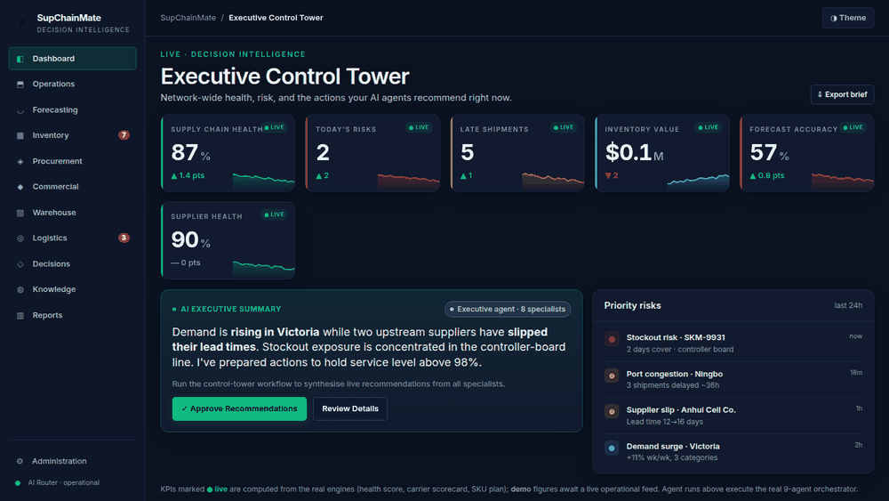
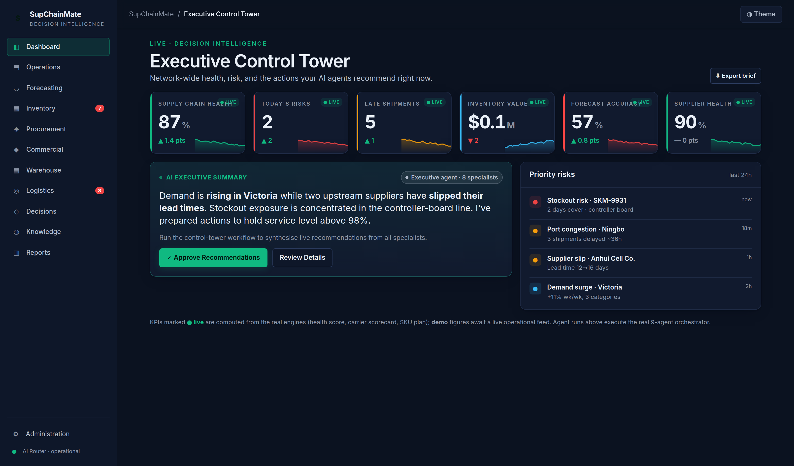
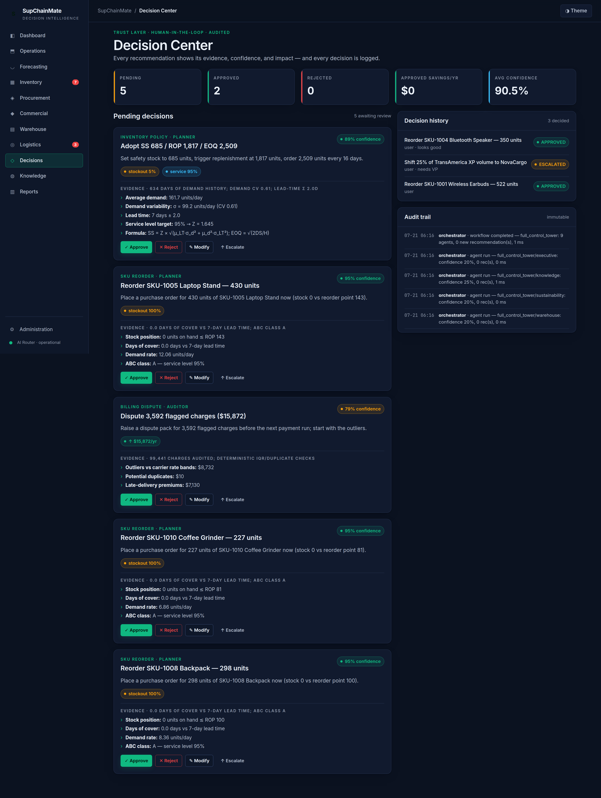
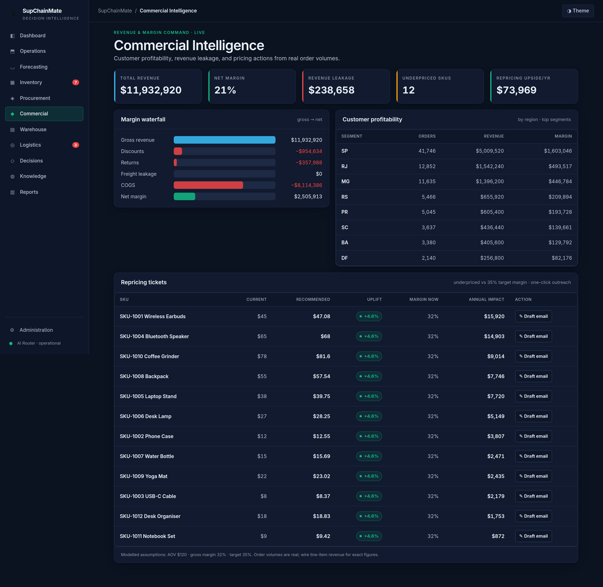
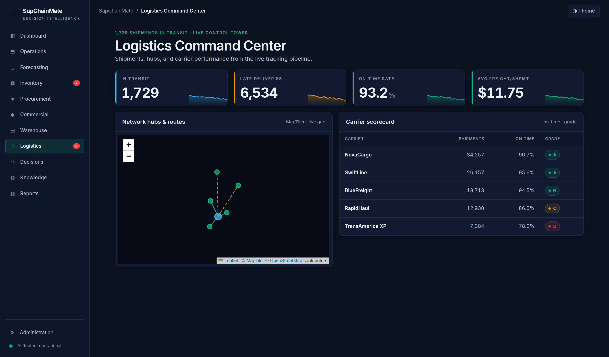
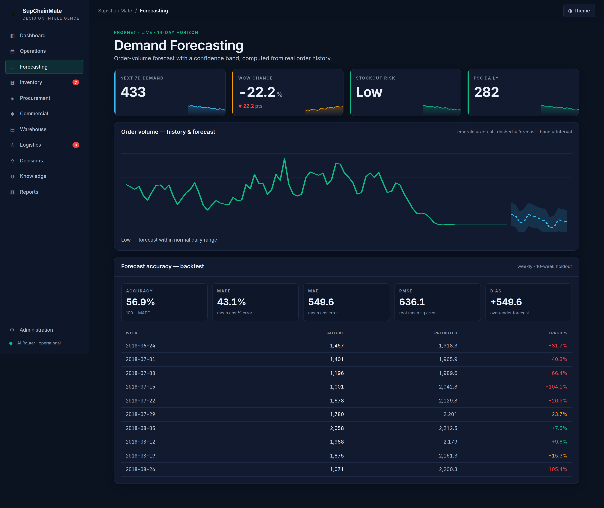
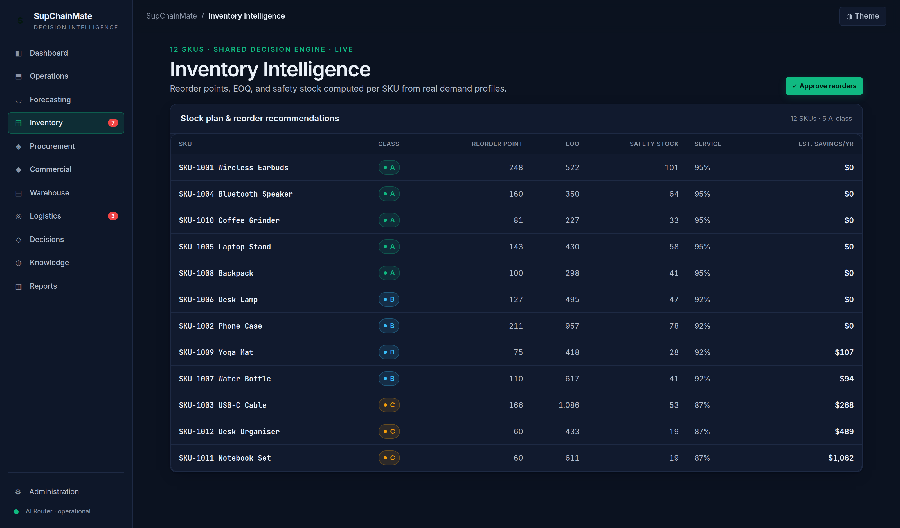

A decision-intelligence control plane for supply chains: demand forecasting, inventory optimisation, logistics and commercial analytics, with an audited decision layer that shows the evidence, confidence and impact behind every recommendation, and lets a person approve it.
Built solo as a portfolio project. Runs on the public Olist Brazilian e-commerce dataset (99k orders); every figure is computed from that data. Where a module needs fields Olist doesn't have (carriers, freight rates, risk signals), the values are simulated and labelled as such in the UI.
Executive Control Tower → Decision Center → Commercial Intelligence → Logistics → Forecasting → Inventory.

Every panel ends in a decision, a document or an export. The numbers come from computation on the data; the AI routes requests and writes the prose.
Each recommendation carries its evidence, confidence and expected impact. Approve, reject, modify or escalate it, and the action lands in an immutable audit trail.
Prophet forecasts with a weekly backtest (MAPE, MAE, RMSE, bias), feeding per-SKU safety stock, EOQ and reorder points.
Network map, carrier scorecards, delay-risk prediction, freight cost audit and a disruption radar that flags where several risk signals converge.
Account profitability, revenue leakage and a margin waterfall, plus a Customer 360 view built from the order history.
A planner routes each request to the right capability. Answers cite the knowledge base, and every feature still works with no API keys.
Upload a CSV or Excel export and map its columns. The whole platform then switches from the demo data to yours; delete the import and it switches back.
From the running app on the Olist demo data.






What keeps it trustworthy.
The repo ships a 5,000-order sample so it clones fast. Full setup, the Next.js frontend and Docker are in the README.
git clone https://github.com/Kisharky/SupChainMate.git
cd SupChainMate/logistics-ai-dashboard
pip install -r requirements.txt
python scripts/fetch_olist.py # optional: full 99k-order dataset
uvicorn api.main:app --reload # API on :8000, then `npm run dev` in frontend/